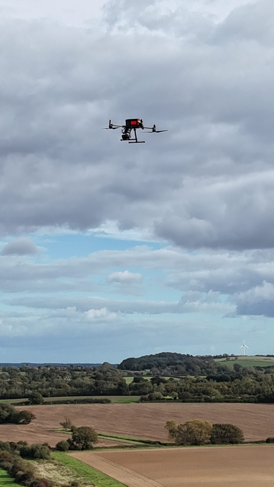

The challenge
Finding nests across extensive habitat
Locating skylark nests within extensive grassland and arable habitats can be challenging, particularly where traditional ground searches are time-consuming or risk disturbing nesting habitat.
Aerial Ecology provides commercial thermal drone surveys designed to identify and assess potential skylark nest locations, supporting targeted ecological assessments and land management decisions.
Our approach
Two complementary survey stages
Each stage narrows the search, so ground effort goes where it's needed.
Stage 1: Night-time detection
Nocturnal thermal surveys are used to identify and georeference potential nest locations, providing a focused set of candidate locations for further assessment.
Stage 2: Early-morning review
Candidate locations are revisited during early-morning surveys, allowing thermal and visual observations to be assessed together and informing any necessary follow-up verification.
Ecologically informed results
Thermal detections are interpreted by experienced ecological surveyors. Potential nest locations are distinguished from confirmed nests, and targeted ground verification can be undertaken where appropriate.
Potential vs confirmed
A thermal detection is not a confirmed nest
We report potential nest locations and confirmed nests separately, so your assessment is built on clear evidence. Targeted ground verification can be undertaken where appropriate.
Why it helps
Focused survey effort
This structured approach helps focus survey effort, reduce unnecessary searching across nesting habitat and provide spatially referenced evidence to support ecological decision-making.
Commercial survey experience
Used on commercial projects
Aerial Ecology has undertaken commercial skylark surveys using thermal drone technology. Our approach combines specialist equipment, ecological field experience and practical survey planning to support consultants and land managers working in habitats where ground-nesting birds require consideration.
Ground-nesting bird thermal surveys
The same two-stage structure can be discussed for other ground-nesting birds. We'll tell you honestly whether it suits your species and site.
Development history
The method was developed through a series of field trials before being used on commercial projects. Read about our method development

Ground-nesting birds on your site?
Focus your skylark nest searches
Tell us about the site, the habitat and the timing, and we'll scope a survey.